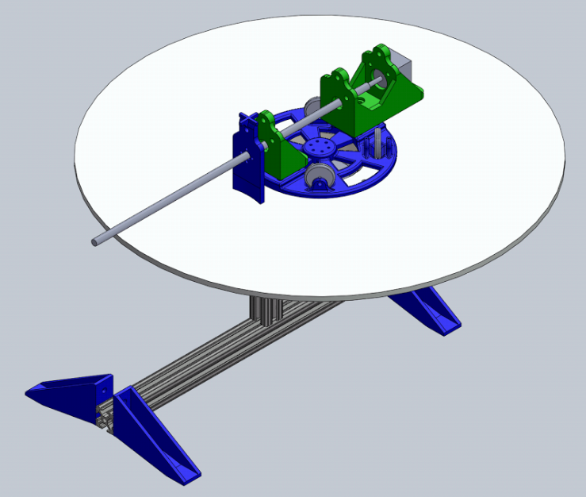
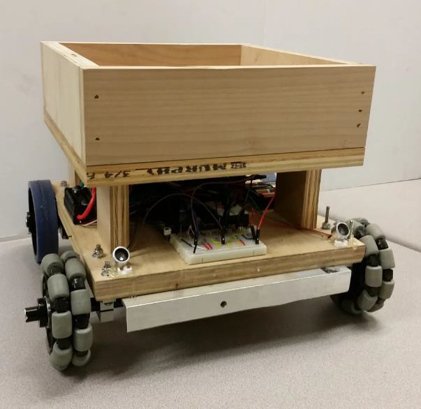

Machine Vision/PID Control Project
 This group project was used to demonstrate concepts we learned in our Machine Vision and Digital Control Systems class. Simply put, this project was a candy sorter. We designed the project inefficiently for the purpose of demonstrating our core class concepts. The design on the right consists of a rotary manipulator arm capable of pushing objects off the round plate shown. The plate itself was set to a constant speed to give the project some complexity regarding object velocity on the plate. The whole system was modeled in Solidworks, 3D printed and fabricated in an outside machine shop. Suspended above this system is a camera, which was used as our sole feedback mechanism, providing machine vision data. This data was collected using a the OpenCV-Python wrapper sent via serial connection to an ATmega328p, running a PID algorithm, which controlled the various motor controlers. Below shows a video of the project.
Machine Vision/PID Control Project Video
Robot "Dog"
 This was my final project for my robotics class at CSUS. I designed, built and programmed a robot capable of carringing ~50lbs of equipment while following the user semi-autonomously. The design is based off of 40khz ultrasonic pulses. The user would hold a ultrasonic transmitter that pointed to the robot. The robot had two ultrasonic reciever circuits that would calculate the distance based off amplitude and calculate the direction based off the difference in signal strengh between the two recievers. One of the drawbacks of this design was discovering how many 40khz noise sources there where that caused interference. The robot ran off of a Parallax Propeller developement board. The dev board made it possible for multiple processes to run on its 8 cores. I was able to include proportional based encoder feedback and proportional based positioning relative to the user.